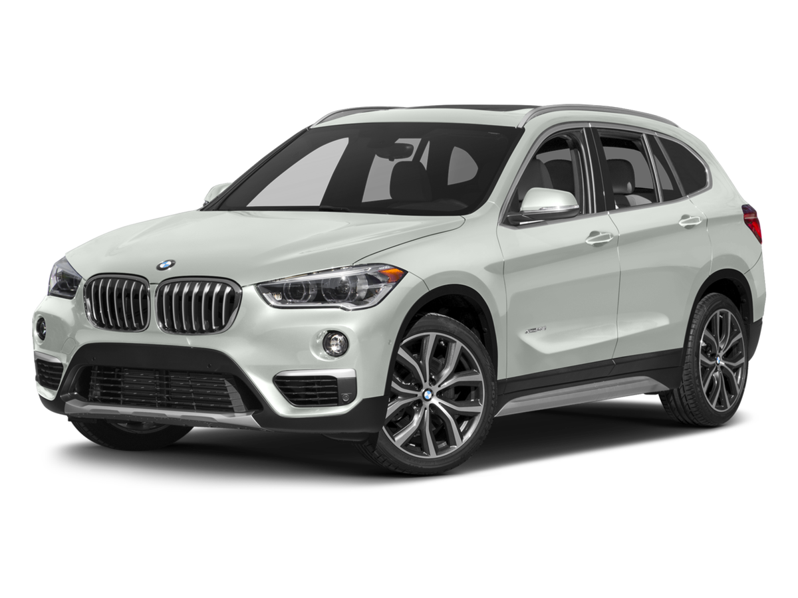

BMW X1
Longueur
4,47 m
Largeur sans rétros
1,79 m
Hauteur
1,56 m
Empattement
2,76 m
Volume de coffre mini/maxi
480 l / 1 350 l
Nombre de portes
5
BMWNombre de places assises
5
Poids à vide
1570Kg
Caractéristiques moteur
Motorisation
Diesel
Puissance fiscale
6 CV
Moteur
4 cylindres en ligne, 16 soupapes
Cylindrée
1 995 cm3
Puissance
116 ch à 4 000 trs/min
Couple
260 Nm à 1 750 trs/min
Type de suralimentation
turbo
Boîte de vitesse, Nb de rapports
Automatique à 8 rapports
Roues motrices
AR

BMW X2
Longueur
4,36 m
Largeur sans rétros
1,82 m
Hauteur
1,52 m
Empattement
2,67 m
Volume de coffre mini/maxi
470 l / 1 355 l
Nombre de portes
5
Nombre de places assises
5
Poids à vide
1 540 kg
Caractéristiques moteur
Motorisation
Diesel
Puissance fiscale
8 CV
Moteur
4 cylindres , 16 soupapes
Cylindrée
1 995 cm3
Puissance
150 ch
Couple
350 Nm à 1 750 trs/min
Type de suralimentation
Pas de suralimentation
Boîte de vitesse, Nb de rapports
Automatique à 8 rapports
Roues motrices
AV